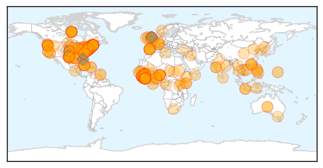
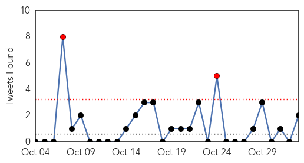
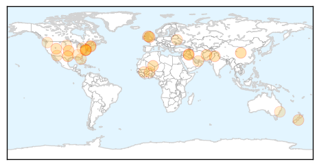

Ebola
30-Day Web Trend
17 alerts, 8 warnings

30-Day Twitter Trend
2 alerts, 15 warnings
Article Locations
Article Confidences

Top Articles:
- 1.000
- Helsinki patient tests negative for Ebola
- 1.000
- US doctor with Ebola improves, nurse reunited with her dog
- 1.000
- Ebola: New York doctor now in stable condition, nurse reunited with dog
- 1.000
- Ebola: UN envoy says response must be sustained
- 1.000
- Fearing Ebola? Doctors advise getting flu shot
- 1.000
- Liberia Ebola 'Progress' Could be Illusory
- 1.000
- New York Doctor With Ebola Improves, Nurse Reunited With Dog
- 1.000
- Fifth Sierra Leone doctor tests positive for Ebola
- 1.000
- Western nations mistreating Ebola ‘heroes’: UK charity
- 1.000
- New York doctor with Ebola improves, hospital says
- 1.000
- WATCH: Public health professor says Ebola is not a threat to students
- 1.000
- Vermonter voluntarily quarantined after trip to West Africa
- 0.999
- Canada restricts visas amid Ebola scare
- 0.999
- Guinea buries Cuban Ebola worker killed by malaria
- 0.999
- Health officials will launch coordinated procedures
- 0.999
- High fever not necessarily Ebola, says ministry
- 0.999
- The Other Side of Ebola: When the Media Causes Doubts and Fear
- 0.999
- NYC doctor with Ebola now in stable condition
- 0.999
- Ebola crisis: Canada visa ban hits West Africa states
- 0.999
- Ebola 'Patient Zero': How outbreak started from single child
- 0.999
- Heartwarming moment nurse cured of Ebola is reunited with her best friend Bentley the dog
- 0.999
- Ebola epidemic spurs hunt for new, faster tests
- 0.999
- The Ebola epidemic
- 0.999
- China Goes Ahead with Its Anti-Ebola Aid -- Beijing Review
- 0.999
- UK sets up three new Ebola Labs in Sierra Leone
- 0.999
- Scientists try to predict number of US Ebola cases
- 0.999
- Amid Ebola scare, Canada restricts visas
- 0.999
- Ebola outbreak in Sierra Leone 'catastrophic'
- 0.999
- Sierra Leone doctor tests positive for Ebola
- 0.999
- Amid Ebola scare, Canada restricts visas
- 0.999
- Ebola Quarantines Ignore Experience and Trample Freedom
- 0.999
- Ebola suspected patient hospitalized in Danang
- 0.999
- Ebola Check: NRIs Follow the Rules
- 0.999
- Sanford designated to treat Ebola
- 0.998
- Liberia traveler at Duke University Hospital currently Ebola free
- 0.998
- NC Patient Monitored for Ebola Tests Negative For Virus
- 0.998
- As Ebola Scare Grows, Canada Restricts Visas
- 0.998
- Ebola is 'not a death sentence,' U.S. cases prove
- 0.998
- NYC Doctor With Ebola Upgraded to Stable Condition
- 0.998
- At worst, 130 Ebola cases in the U.S. by year's end
- 0.998
- Liberia opens Ebola treatment center Republican American
- 0.998
- NYC Doctor With Ebola Shows Signs of Improvement
- 0.998
- Ebola is not finished with USA yet
- 0.998
- You spread more disease than Ebola nurse
- 0.998
- New York Doctor With Ebola in Stable Condition; Dallas Nurse Nina Pham Reunites With Her Dog Bentley
- 0.998
- Scientists try to predict number of US Ebola cases
- 0.998
- Legacy of SARS in Asia offers lessons for Ebola fight across the globe
- 0.998
- Jacksonville hospitals say they are ready for Ebola
- 0.997
- France treats UN aid worker who contracted Ebola in Sierra Leone
- 0.997
- Scientists try to predict total number of U.S. Ebola cases;
Showing top 50 articles...
Top Tweets:
- 0.969
- Mali. Plan de riposte du Mali pour face à la menace d’épidémie à virus Ebola Ebola ebolaresponse http://t.co/SyDlXaUQOU
- 0.898
- RT: Opinion: You spread more disease than Ebola nurse http://t.co/fZUobbNYBc Africa SierraLeone US Maine MSF
- 0.893
- AFD Blog `@CDCgov Guidance: Ambulatory Care Evaluation Of Patients With Possible EVD (Ebola Virus Disease)' http://t.co/MLMwKVe5ip
- 0.891
- Mali. Ebola virus disease, 31 October 2014 ebolaresponse http://t.co/Qy1YFVndLg
- 0.873
- Ebola 'increasing' in Sierra Leone http://t.co/ESFynvm9w6
- 0.848
- Mali. Création d'un centre opérationnel d'urgence pour la gestion de la crise,31 octobre 2014 ebola EbolaResponse
- 0.823
- AFD Blog `French MOH Statement On UN Employee Evacuated From Sierra Leone With Ebola' http://t.co/K2vVbq6wD7
- 0.811
- Map. Regional ETU status to Ebola outbreak in West Africa, 31 October 2014 ebolaresponse http://t.co/kJi0yy65oC
- 0.789
- Food security impact of 2014 Ebola epidemic in Guinea, Liberia and Sierra Leone ebolaresponse http://t.co/3tuqQNhLSw
- 0.741
- RT: UN Ebola response chief says disease 'still very much a crisis' http://t.co/fTD03pBwaN
- 0.741
- RT: Ebola virus transmission, quarantine, incubation period, immunity, and much more on TWiV 309 now up http://t.co/nBrmdCwuZ7
- 0.716
- We try to update u as much as we can about Ebola but pls share if u av any news in relation to ebola. Pls educate people about the virus
- 0.688
- Strategies for containing Ebola in West Africa@sciencemagazine Ebolaresponse http://t.co/PDwopFIAKP
- 0.670
- In Liberian slum, Ebola quarantine magnifies misery http://t.co/Mn57Vwzt8g TackleEbola
- 0.666
- Goodwill Ambassador says: "Don’t Let Ebola Dehumanize Africa" http://t.co/Bo8fgK4ag4 EbolaResponse
- 0.613
- 1-on-1 with 2 dr's just back from treating ebola patients in west africa http://t.co/HwJnQxQ3Cb sgmd 730a et
- 0.605
- Ebola imposes substantial loss in household incomes in Guinea, Liberia and Sierra Leone, 24 October 2014 http://t.co/qK7Eyfc2ti
- 0.589
- RT: Projected 1,000 new cases a week equivalent to a new Ebola outbreak happening every fortnight. http://t.co/0vAdUSYrBG
- 0.585
- Morning you all. If you are a Christian and going to church today pls pray for Ebola affected countries. Amen!
- 0.565
- Ebola outbreak: Get up to speed http://t.co/yDY13oBMH1
- 0.565
- Ebola outbreak: Get up to speed http://t.co/n1pPpZHPYp
- 0.561
- Video. A trail of trauma at ground zero of the Ebola epidemic Guinea @unicefguinea EbolaResponse http://t.co/pjFPBbtc36
- 0.538
- Sierra Leone calls Canada's move to suspend visas for residents of Ebola infected countries discriminatory. http://t.co/XURqAe3ZSR
- 0.516
- RT: Africastopebola une chanson diffuse les consignes pour éviter la propagation Ebola https://t.co/9tGGHaAU6C
Unknown
30-Day Web Trend
0 alerts, 0 warnings

30-Day Twitter Trend
3 alerts, 0 warnings

Article Locations
Article Confidences

Top Articles:
- 0.980
- KSWO, Lawton, OK- Wichita Falls, TX: News, Weather, Sports. ABC, 24/7, Telemundo -
- 0.960
- Farmers hope new steps will contain epidemic killing piglets
- 0.920
- Every child to be offered the flu vaccine in government scheme
- 0.917
- Chicago Tribune
- 0.905
- Google Retools Its Flu Prediction Engine After Getting It Wrong
- 0.866
- Bomb kills 14 Shi'ite pilgrims in Baghdad's Sadr City
- 0.866
- Pakistani Taliban claim responsibility for Pakistan-India border attack
- 0.866
- At least 35 killed, up to 70 wounded in Pakistan-India border blast
- 0.866
- U.S., allies conduct seven strikes on Islamic State in Iraq, Syria
- 0.866
- Solar Impulse 2 aircraft is pulled out of its base for tests by pilot Bertrand Piccard in Payerne
- 0.866
- France says French soldier killed in Mali during anti-terrorist operation
- 0.833
- Tyler Hospitals Complete Smallpox Plan - KLTV.com-Tyler, Longview, Jacksonville, Texas
- 0.820
- Food Poisoning Costs U.S. $15,600,000,000 Yearly
- 0.800
- POV: Vote Yes Tomorrow for Mandatory Paid Sick Leave
- 0.795
- Health Warning for Algal Bloom at St Anne’s Lagoon lifted
- 0.747
- New Hampshire reports increase in gonorrhea; chlamydia and syphilis cases down
- 0.723
- Sharjah tops emirates with highest suicides - Emirates 24
- 0.671
- Ukraine rebels elect leader in vote dubbed a ‘farce’ by Kiev
- 0.671
- Remembering slain RFI journalists: 'Imagine a world without news'
- 0.671
- Army promises unity government as thousands protest in Burkina Faso
- 0.671
- Thousands protest against post-coup army rule in Burkina Faso
- 0.650
- Cavities again? Blame the Tucson water system ...
- 0.636
- Mom blames daughter's paralysis on flu shot
- 0.595
- Surgeons urge authorities to make weight loss procedures available in public health system
- 0.593
- Alarming rise in rates of untreatable gonorrhea
- 0.568
- Alabama state health reports unusual outbreak at 6 hospitals
- 0.567
- New test will combat major cause of preventable blindness in Africa
- 0.553
- Bovine tuberculosis in the UK- the bigger picture
- 0.550
- WFMJ.com News weather sports for Youngstown-Warren Ohio
- 0.504
- Kenya : Kenya may be producing half-baked doctors, report
Top Tweets:
- 0.614
- RT: IMED2014 bats with mers cov exp infection: no seroconversion
- 0.569
- RT: IMED2014 jamaican fruit bat experimental infection with MERS COV 10 bats: low level virus replication, shedding and so…